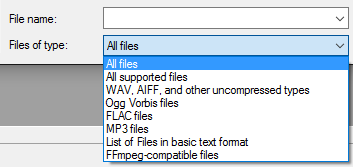

Importing Audio
| Audacity projects cannot be opened using the command, you will get an error message. If you have already saved your audio as an Audacity Project, use or to open the <my_project_name>.aup. |
| Do not attempt to open, import or manipulate any individual AU files. See Audacity Projects for more information. |
Contents
- Audio File Formats Supported by Audacity
- Three Ways to Import Audio
- Metadata
- Using the file type dropdown menu in the Open and Import Audio Dialogs
- Importing audio from CDs
- Sample Rate and Sample Format of imported files
Audio File Formats Supported by Audacity
The audio formats importable by Audacity with the command, as shipped are:
Uncompressed audio formats
For uncompressed audio: most WAV and AIFF files including all PCM variants can be imported into Audacity
Compressed audio formats
Compressed audio: Ogg Vorbis, FLAC, MP2 and MP3 can be imported into Audacity.
FFmpeg for other importable audio formats
You can install the optional FFmpeg library to import a much larger range of audio formats including AC3, AMR(NB), M4A, MP4 and WMA (if the files are not DRM-protected to work only in particular software).FFmpeg will also import audio from most video files or DVDs that are not DRM-protected.
- If files do not have header information (such as RAW or VOX ADPCM) or have non-standard header information, you can normally import them using .
- WAV files from portable recorders may contain proprietary compressed audio. These should not be imported as Raw Data, but by installing the FFmpeg library.
- LOF files (lists of files) are also supported if the list is correctly formatted and contains supported files.
| Audacity does not natively support Opus format. If FFmpeg is installed, Audacity will attempt to use FFmpeg for importing Opus files. |
You cannot Import Audacity Projects
Note carefully that you cannot use the Import command to open Audacity projects - use to open projects.
If you try to do this you will get an error message.
Three Ways to Import Audio
No matter which method you use to bring an audio file into Audacity, the file is always imported into a saved or unsaved Audacity project. The imported file always appears in a new track in that project.
1.
If you select the command, then choose one or more audio files, Audacity will import the selected file(s) into the existing project. This is useful to bring the content of one or more audio files into a project that already contains audio (for example, to mix several audio files together).
2. (Open Recent on Mac)
This command imports a single file from a list of the 12 most recently imported files or recently saved projects. The file opens in a new window exactly as .
3. Drag and drop
| Note that you cannot use drag and drop (into an open Audacity Project window) to open Audacity projects - use to open projects. |
- On Windows and Mac
- Drag and drop one or more audio files into an open Audacity project window: this is equivalent to .
- Drag and drop one or more audio files onto the Audacity icon: this is equivalent to .
- On Linux:
- Drag and drop files into an open Audacity Project window: this is equivalent to .
- Drag and drop one or more audio files onto the Audacity icon: only the first file will open. More than one file dragged and dropped onto the icon will do the same as the command for the first file, but the other files will generate an error message saying that Audacity is already running.
This command behaves differently according to whether the project window in which you use the Open command has ever contained tracks of any type.
- If the project contains or has ever contained tracks at some point in its history (so that and are not empty), Open imports each file you select into its own new project window. For example, selecting three files would create three new project windows, each containing one of the files and each a separate project with its own history. This is handy if you want to apply different actions to different (or even the same) files and easily compare the results of each.
- If the project is empty and has never contained any tracks (for example, you used to create a new, empty project or used to close an existing project), Open imports the first file into the empty project window, then imports each subsequent file into its own new project window.
So to save your edits to an audio file for the computer you always have to choose an Export command from the File Menu, even if you want to overwrite the exact same file that you imported.
Metadata
Audio files can carry descriptive information in a metadata container, this allows information such as the title, artist, album, track number, and other information about the file to be stored in the audio file itself.
Each time an audio file is imported into the same project window, the metadata tags for that file replace the previously stored metadata for the project. So if the last imported file has no metadata, the project will no longer have any stored metadata. Using one of the above methods that imports each file into its own project window will ensure each file's metadata is stored.
This menu (called "Format" on Mac) contains a list of different file types.
- 
Choosing a particular file type in the menu performs two functions.
- The file type choice filters the list of files in the window by restricting it to files of that type.
- The file type choice determines which importer attempts the file first when using the Open or Import Audio dialogs. For example, a WAV file could be imported by Audacity's native WAV importer or by the optional FFmpeg library if this was installed.
Additionally, rules for the order in which different importers attempt files of particular types can be created at Extended Import Preferences with an option to over-ride the Open and Import Audio file type choice. See Import Filtering and Importer Order for more details.
Importing audio from CDs
Audacity does not contain any function for importing (ripping) audio from CDs. This can, however, be achieved by using other applications to extract the data into a file format Audacity does support.
See the tutorial How to import CDs.
Sample Rate and Sample Format of imported files
Audacity always imports files at their original sample rate, as displayed in the Track Information Area of the Track Control Panel.
When importing a file into an empty project window (as always happens when using as described below), the Project Rate control in Selection Toolbar changes if necessary to reflect the rate of the file. The Project Rate determines the sample rate a file will be exported at, so no further adjustment is needed to export that file at its original rate. However, once there is already an audio track of any origin in the project (either an imported file, a recording or generated audio), importing an audio file will never change the project rate.
Generally, Audacity imports files at the sample format (bit depth) specified at Default Sample Format in Quality Preferences. This setting defaults to 32-bit float. Therefore by default an imported file will show in the Track Control Panel as 32-bit float, even if its original bit depth is lower. This is best for high-quality editing. Even if you choose a lower Default Sample Format than 32-bit float, Audacity will never downconvert a file that has a higher bit depth, as shown in the following table for WAV and AIFF imports using the standard uncompressed files importer.
Resolution of imported WAV and AIFF files using standard importer Default Sample Format File bit depth Resolution imported at 16 16 16 16 24 32 16 32 32 24 16 24 24 24 32 24 32 32 32 (default) 16 32 32 (default) 24 32 32 (default) 32 32
OGG is unusual in that it will always import at 16-bit resolution using the standard OGG Vorbis importer, irrespective of Default Sample Format. This is due to the design of the OGG codec. However OGG can be imported at 32-bit resolution using FFmpeg, as described at Using the file type dropdown menu.